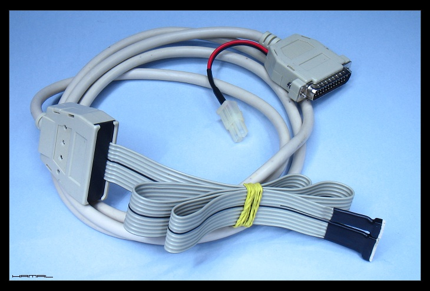
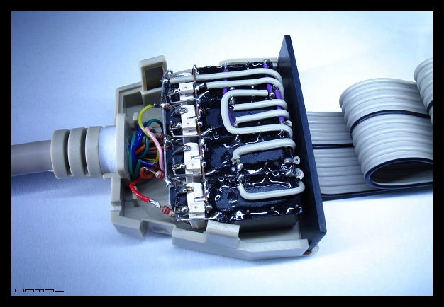

.
Samodzielna budowa Autoguidera
|
Posiadam nietypowy montaż, potrzebowałem więc nietypowego Autoguider-a, niemniej bez najmniejszego problemu można powyższy autoguiding zaprzęgnąć do pracy z fabrycznymi typowymi urządzeniami. Całość bazuje na programie guidującym oraz złączu LPT komputera. Ponieważ całe sterowanie bazuje na pinach 0-1-2-3 LPT należało sterowanie długimi czasami kamerki autoguidera w programie K3CCD oraz guiderze przenieść na porty 4-5-6-7. OPIS Kamerka Autoguidera uruchomiona w programie guidującym przesyła do portu LPT (wtyczka DB25) odpowiednie komunikaty, które na pinach 0-1-2-3 uzyskują odpowiednie stany logiczne, te przekształcone przez cztery transoptory CNY 17-3 (separacja galwaniczna układu sterowania od komputera) sterują czterema przekaźnikami 5V HFD27/005-S za pośrednictwem czterech tranzystorów BC 547B co sygnalizują diody led SMD. Całość mieści się we wtyczce od drukarki CEN36. To jakie zadania wykonują te cztery przekaźniki zależy już od rodzaju waszego napędu i sterowania. U mnie jedna para przekaźników realizuje funkcje zwierania, pierwszy zwiera przyspieszenie silnika krokowego osi RA, drugi zwiera spowolnienie tegoż silnika tej osi. Sterowanie silnika krokowego osi RA odbywa się za pomocą układu AVT1314B. Druga para przekaźników działa jako przełącznik krzyżowy, zmieniając polaryzację silniczka DC napędzającego oś DEC. Ja u siebie dodałem też funkcję sterowania silnika DC w osi RA, mniejsze wibracje, większa płynność pracy ale jest to realizowane już w obrębie astropilota. Bo to do astropilota kierowane są te komunikaty ( nie bezpośrednio do montażu)  Home made Autoguiding  Home made Autoguider 
|